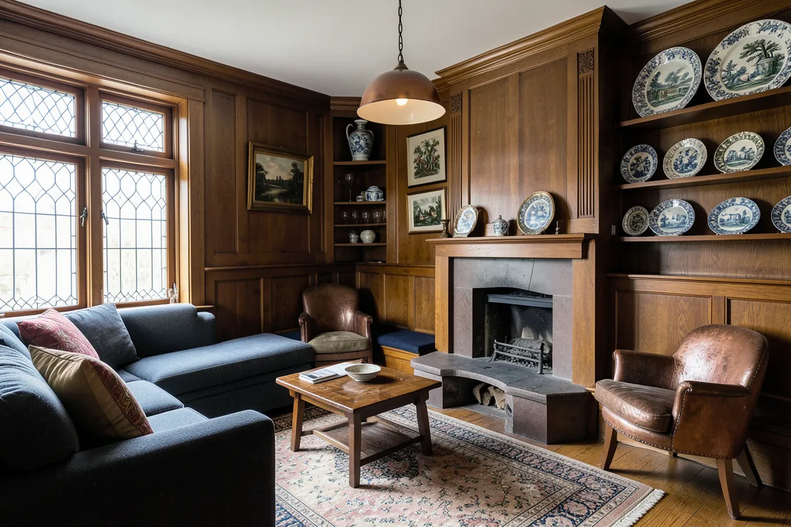

interiør · 1861–1920 · også: Arts and Crafts-interiør, Craftsman-interiør, Mission style
Håndverksreformen av det viktorianske rommet. Håndlagde eikemøbler viser skjøtene sine, en dyp peiskrok rommer ildstedet, og ett stilisert plantemønster går på veggene eller tekstilene; lave bjelker og innebygde benker gjør rommet ærlig og varmt.

Kjerneidé
Et rom er ærlig når hvert stykke er laget for hånd av lokale materialer og viser hvordan det er laget.
Designprinsipper
Vis konstruksjonen: åpne skjøter, plugger, bjelker og håndsmidde beslag.
Bruk ett stilisert plante- eller fuglemønster per rom, på tapetet eller på tekstilene, ikke begge deler.
Bygg møblene inn i rommet: benker, vindussete, anretninger og bokhyller.
Gjør ildstedet til et rom i rommet: en peiskrok med innebygde seter.
Hold fargene fra naturen: eikebrun, salviegrønn, oker og krapprød.
Legg en høy billedlist eller en tallerkenhylle på omtrent 2/3 av veggens høyde, slik at taket føles lavt.
Bruk hamret kobber, blyglass og håndsnurret keramikk til aksentene.